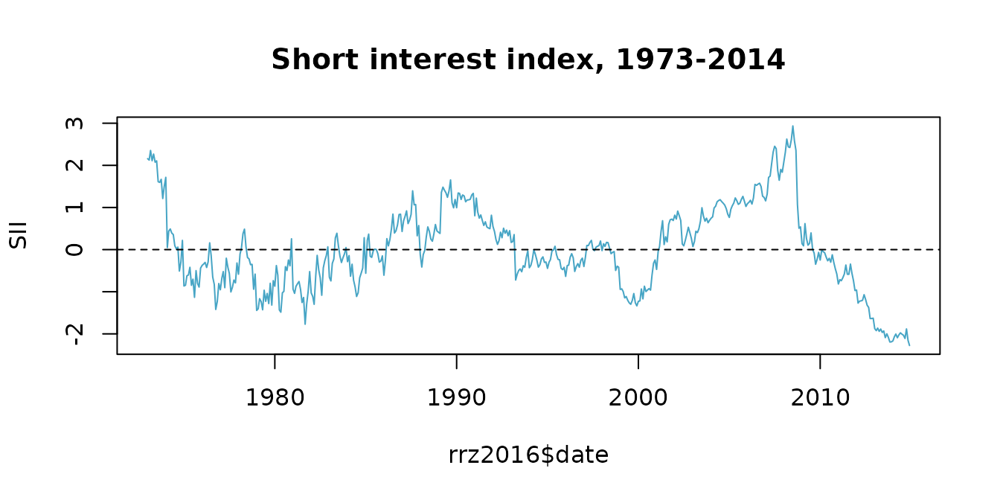

This article replicates Table A2 of the online appendix to Rapach, Ringgenberg, and Zhou (2016), “Short interest and aggregate stock returns” (Journal of Financial Economics, 121, 46-65), using two functions from forecastdom:
-
ivx_wald(): the Kostakis, Magdalinos, and Stamatogiannis (2015) IVX-Wald test for return predictability with persistent regressors. -
qll_hat(): the Elliott and Müller (2006) test for time-varying coefficients.
The predictive regression is
at horizons . IVX-Wald tests . The statistic tests for all .
library(forecastdom)
library(ggplot2)
data(rrz2016)The data
Monthly U.S. log excess return on the S&P 500 and the standardised linearly-detrended log of the equal-weighted short interest index (EWSI), 1973-01 to 2014-12 (504 observations).
ggplot(rrz2016, aes(date, SII)) +
geom_hline(yintercept = 0, linetype = "dashed", colour = "grey60") +
geom_line(colour = "#47A5C5", linewidth = 0.6) +
labs(x = NULL, y = "SII",
title = "Short interest index, 1973-2014") +
theme_minimal()
Replicating Table A2
The original MATLAB program (Compute_IVX_Wald.m in the
JFE data archive) calls the IVX-Wald with
beta = 0.99, M_n = 0 and the negated SII.
RRZ hypothesise that SII negatively predicts returns, and the sign does
not affect the Wald statistic. The
test is called with Newey-West truncation L = h. We pass
the same arguments to ivx_wald() and
qll_hat().
horizons <- c(1, 3, 6, 12)
results <- do.call(rbind, lapply(horizons, function(h) {
ivx <- ivx_wald(rrz2016$r, matrix(-rrz2016$SII, ncol = 1),
K = h, M_n = 0L, beta = 0.99)
T_ <- nrow(rrz2016)
P <- T_ - h
y_h <- sapply(seq_len(P), function(t) mean(rrz2016$r[(t + 1):(t + h)]))
X_h <- matrix(rrz2016$SII[1:P], ncol = 1)
Z_h <- matrix(1, P, 1)
qll <- qll_hat(y_h, X_h, Z = Z_h, L = h)
data.frame(h = h, IVX_Wald = ivx$statistic, qLL = qll$statistic)
}))
knitr::kable(results, digits = 3, row.names = FALSE,
col.names = c("$h$", "IVX-Wald", "$\\widehat{qLL}$"))| IVX-Wald | ||
|---|---|---|
| 1 | 3.377 | -3.721 |
| 3 | 4.513 | -4.858 |
| 6 | 4.603 | -4.909 |
| 12 | 3.669 | -5.016 |
Critical values (from RRZ 2016, online appendix):
- IVX-Wald: 10% = 2.71, 5% = 3.84, 1% = 6.64.
- : 10% = , 5% = , 1% = (reject for small values).
For comparison, the paper reports IVX-Wald = 3.38*, 4.51**, 4.60**, 3.67* and qLL = , , , . Our values match to two decimal places at every horizon. Conclusion: SII predicts the equity premium at all horizons (significant IVX-Wald) and constant is not rejected.
References
- Elliott, G. and Müller, U. K. (2006). Efficient tests for general persistent time variation in regression coefficients. Review of Economic Studies, 73(4), 907-940.
- Kostakis, A., Magdalinos, T. and Stamatogiannis, M. P. (2015). Robust econometric inference for stock return predictability. Review of Financial Studies, 28(5), 1506-1553.
- Rapach, D. E., Ringgenberg, M. C. and Zhou, G. (2016). Short interest and aggregate stock returns. Journal of Financial Economics, 121(1), 46-65.